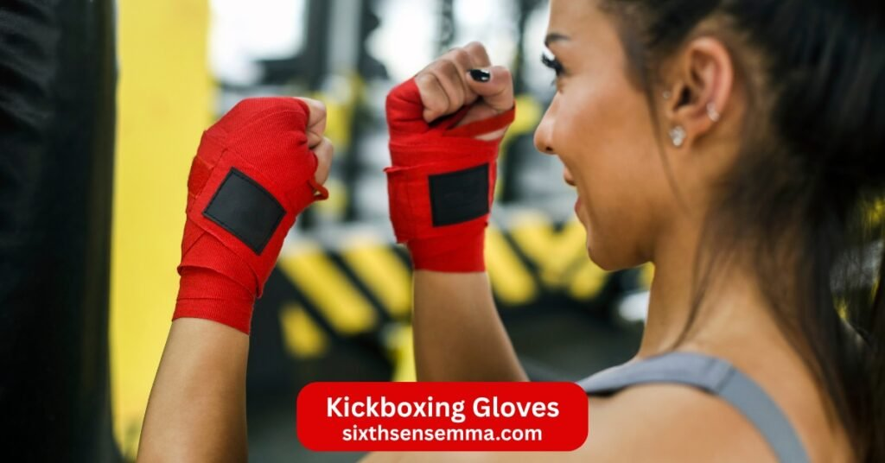
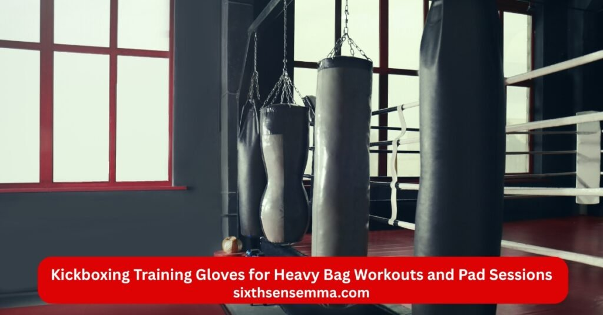
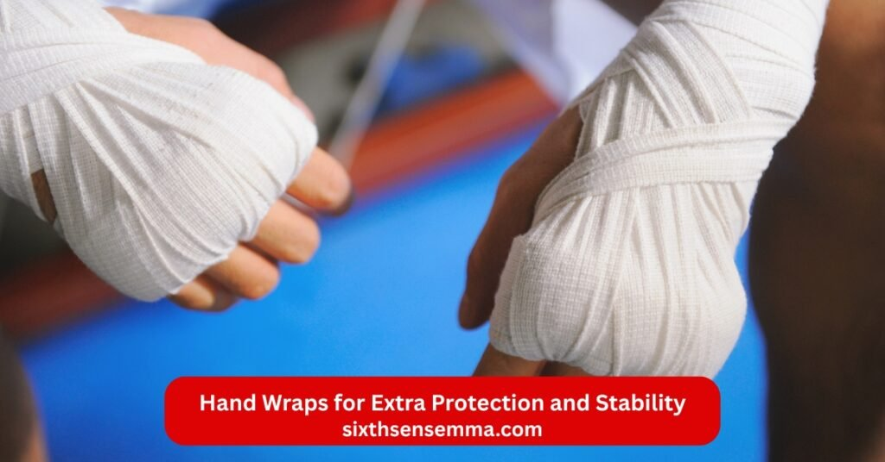

Kickboxing Gloves Enhance Your Muay Thai and Training at Sixth Sense MMA

Kickboxing gloves are specially padded gear made for hands during kickboxing and muay thai sessions at gyms like Sixth Sense MMA. They feature a flexible design with balanced padding that supports punch, clinch, and block actions while allowing strong grip and mobility for all types of strikes. Unlike regular boxing gloves, kickboxing gloves offer better hand movement and wrist support so you can train safely on the bag, pad, or in spar. They protect your knuckle areas, absorb shock from impacts, and add stability to lower injury risk for both you and your partner in every active kickboxing training class.
Common Problems with Kickboxing Gloves
Many people face issues with kickboxing gloves that affect their sessions. Wrong choices lead to pain or slow progress in train. Poor fit causes slipping during punch moves. Low-quality padding fails to guard the hand and knuckle. Over time, these problems make workout sessions less enjoyable and raise injury chances. At our gym, we often help members fix these common troubles quickly.
Poor Fit and Wrist Protection Leading to Discomfort During Workouts
A bad fit in kickboxing gloves can cause issues during workout. If the wrist lacks support, you feel pain after a few rounds. Many face this with loose strap systems. Are kickboxing and boxing gloves the same? Not always, as design differs. Poor choices lead to blisters or strain. We hear from members about discomfort in long sessions. Picking the wrong size adds to this problem.
Inadequate Padding and Knuckle Protection Causing Hand Injuries
Inadequate padding in kickboxing gloves often leads to hand injuries over time. When the knuckle protection falls short, every punch on the bag sends direct shock to your bones. Many boxer members arrive with sore hands from older glove models that lack proper foam padding or knuckle padding. This problem grows during heavy bag workouts and spar. Without layer support, small bruises turn into lasting pain. At our gym, we see how weak hand protection slows down train progress and keeps people away from classes.
Kickboxing Gloves vs Boxing Gloves: Key Differences in Design and Use
Kickboxing gloves and boxing gloves look similar at first glance but serve different needs in train. The main difference starts with design. Kickboxing gloves feature a more open finger area and flexible construction to allow clinching and grabbing during muay thai or thai fights. This helps when you strike with punches, kicks, elbows, or knees. Boxing gloves have thicker, rounded padding focused only on punch protection since boxing rules ban clinches. Kickboxing boxing gloves often weigh less in certain oz for faster movement.
Challenges for Beginners and Women with Size and Weight Selection
Beginners often feel lost when picking size and weight for kickboxing gloves. A glove that feels too heavy in oz tires the arms quickly during train or workout. Many new members choose oversized training gloves and lose precision in punch work. Women face extra hurdles because standard gloves for kickboxing adult run wide and long for average male hand shapes. This loose fit reduces wrist support and causes slipping inside the glove. Finding the right kickboxing training gloves with proper strap length matters a lot. Best kickboxing gloves for women need slimmer finger sections and lighter oz options.
Solutions Provided by Sixth Sense MMA
Best Kickboxing Gloves for Beginners with Foam Padding and Wrist Strap
We offer best kickboxing gloves for beginners at our shop. These feature foam padding and strong wrist strap. Kickboxing gloves for beginners like these build confidence. Our picks include durable construction with synthetic leather. Members train better with hand wraps added. Look for everlast or similar for entry level. This helps in mma basics and kickboxing training.

Kickboxing Training Gloves for Heavy Bag Workouts and Pad Sessions
Kickboxing training gloves perform well during heavy bag workouts and pad sessions at our gym. These gloves for kickboxing feature thick foam padding to absorb strong punch impacts on the bag. Members use them for long rounds without hand fatigue. The strap system locks the wrist for stability when hitting pad with power. Synthetic leather or full leather builds last through daily strike practice. 16oz weight offers a solid balance for workout intensity. Training gloves differ from lighter sparring gloves by focusing on maximum protection against hard surfaces.
Muay Thai and Kickboxing Glove Brands Like Hayabusa and Venum
Explore muay thai and kickboxing gloves brands such as hayabusa and venum. Best kickboxing gloves brands like these use superior technology. Best kickboxing gloves brand options include handmade craftsmanship. We carry top 10 kickboxing gloves from reliable makers. Best kickboxing gloves 2025 feature updates in durability.
Custom Size Guidance for Oz Weight and Fit in MMA Training
At Sixth Sense MMA, we give personal custom size guidance to match oz weight and fit for your mma training. Every hand shape differs so we measure your fist and wrist before suggesting kickboxing gloves. Size chart helps pick the right glove from 16oz for heavier protection down to lighter options for speed. Heavier oz suits spar and heavy bag workouts while lighter ones work for quick punch drills. Snug fit prevents sliding and boosts stability. We check finger length to avoid extra space inside the glove. Training gloves in proper weight reduce strain during long gym sessions.

Hand Wraps for Extra Protection and Stability
Hand wraps provide extra protection and stability under your kickboxing gloves. They wrap tightly around the hand and wrist to support bones during hard punch impacts. Many members at our gym use hand wraps before putting on training gloves or sparring gloves. This adds a key layer that prevents twists in heavy bag workouts. Wrap styles come in cotton or elastic for better fit. They guard the knuckle areas and keep the wrist aligned in muay thai sessions. Without them, gloves for kickboxing alone may not stop small injuries over time.
Best Kickboxing Gloves for Women with Mesh Palm and Comfortable Design
Best kickboxing gloves for women focus on a slimmer fit that matches smaller hand shapes at our gym. Many include mesh palm sections for better airflow during long workout rounds. This keeps sweat away and adds comfort in muay thai or kickboxing training. Comfortable design features softer lining and curved finger areas that follow natural fist shape. Synthetic leather builds stay durable yet light on the wrist. Brands like venum and hayabusa offer these with strong strap support. Knuckle padding layers provide protection without bulk. Women in our classes prefer 16oz or lighter oz for speed in pad work and spar. Mesh palm tech similar to evercool prevents slippery feel inside the glove. Best gloves for kickboxing in women’s styles reduce blisters and improve grip.
Benefits of Our Kickboxing Glove Solutions
Our kickboxing glove solutions bring clear gains to every train session at the gym. Members enjoy stronger hand protection and knuckle padding that cut down on pain after heavy bag workouts. The comfortable fit with mesh palm and synthetic leather lets you spar longer without hot hands. Wrist stability from secure strap designs supports powerful punch moves in muay thai. Overall durability and performance make these gloves for kickboxing a reliable choice for daily fitness training.
Enhanced Protection with Layer Foam Padding and Knuckle Padding
Our kickboxing glove solutions deliver enhanced protection through multi layer foam padding and dedicated knuckle padding. This setup absorbs shock from every punch on the bag or during spar. The layer design spreads impact across the hand and reduces strain on bones. Knuckle padding adds targeted support where you need it most in heavy bag workouts. Members feel safer throwing full power strike moves in muay thai classes. Maximum protection comes from high-density foam padding that holds shape over time.
Improved Comfort for Long Gym Sessions and Fitness Training
Improved comfort stands out in our kickboxing glove picks for extended gym sessions and fitness training. Features like mesh palm allow air to flow and reduce sweat buildup during intense workout rounds. Comfortable inner lining feels soft against the hand even after hours on the bag or pad. Synthetic leather stays flexible without stiff spots that cause blisters. Snug fit with curved finger design follows natural fist movement for less friction. Evercool style ventilation keeps things dry in muay thai classes.
Maximum Wrist Stability and Durable Synthetic Leather Construction
Maximum wrist stability comes built into our kickboxing glove selections through long strap systems and reinforced wrist support. This design locks everything in place during powerful punch throws or heavy bag workouts. The strap wraps multiple times for a custom tight fit that prevents twisting in muay thai clinches. Durable synthetic leather construction holds up against daily wear in the gym. High-quality synthetic leather resists cracks and tears better than cheaper materials over months of train.
Versatile for Sparring, Punching, and Competition Equipment
Our kickboxing gloves work well for sparring, punching, and competition equipment needs. The flexible design supports partner drills in spar without limiting movement. Thick padding handles hard punch work on the bag or pad during train. Many members use the same pair for muay thai fights and daily workout sessions. Durable synthetic leather and strong strap make them reliable across different gym activities. This versatile setup fits beginner practice all the way to competition prep at Sixth Sense MMA.
Case Studies from Sixth Sense MMA
Real stories from our members at Sixth Sense MMA show how the right kickboxing gloves change train results. These examples highlight progress in muay thai, mma training, and daily workout sessions. Each person started with different needs but found success through proper glove choices. Hand protection and comfort played big roles in their growth. Read how training gloves supported their punch work and spar drills. These cases reflect common experiences in our gym. Members often share similar gains after switching equipment. Kickboxing training becomes more consistent with reliable gloves for kickboxing.
Beginner Boxer Builds Confidence with Proper Kickboxing Gloves
Alex, a beginner boxer, started at Sixth Sense MMA feeling unsure about his punch power and hand safety. We set him up with proper kickboxing gloves featuring 16oz weight, solid foam padding, and a secure wrist strap. The snug fit plus hand wraps gave him stability right from his first heavy bag workouts. Within weeks, he hit the bag and pad harder with no pain and joined spar sessions confidently. Now Alex loves muay thai classes and credits the right gloves for kickboxing for building his skills fast.
Advanced Fighter Improves Sparring with Premium Kickboxing Gloves
Mark, an advanced fighter in muay thai, joined Sixth Sense MMA to level up his spar sessions. His old kickboxing gloves lacked fresh padding and solid wrist support after heavy use. We upgraded him to premium kickboxing gloves from venum with multi layer foam padding and strong knuckle padding. The durable synthetic leather and secure strap delivered maximum wrist stability for intense punch exchanges. Now Mark hits harder with better precision and performance in every sparring gloves round at the gym.
Women’s Experience with Kickboxing Gloves in Group Classes
A group of women in our muay thai classes at Sixth Sense MMA switched to best kickboxing gloves for women with mesh palm for better breathability. The slimmer fit and comfortable design stopped slipping during fast punch combos on the pad. 16oz weight plus knuckle padding gave solid protection in heavy bag workouts without feeling bulky. Hand wraps and secure wrist strap added stability for their hand sizes. Now they enjoy longer gym sessions with stronger performance and share great kickboxing gloves review best under 300 zl.
Why Choose Sixth Sense MMA for Kickboxing Gloves
At Sixth Sense MMA, expert instructors guide you on the best kickboxing gloves to match your hand size and train style. We stock top kickboxing gloves brands like everlast, venum, and hayabusa for quality choices. Members try gloves for kickboxing in person at our Coppell TX gym before buying. Personal fit advice on oz weight and wrist support sets us apart. Visit us for reliable equipment that boosts performance in every muay thai session.
Expert Instructors Guide on MMA Gloves and Equipment
Our expert instructors at Sixth Sense MMA guide members on mma gloves and all equipment choices every day. They explain differences between mma gloves, kickboxing gloves, and sparring gloves based on your train needs. Hands-on help covers fit, oz weight, wrist support, and knuckle padding details. Instructors recommend hand wraps and proper strap use for maximum protection in muay thai or heavy bag workouts. You get personal advice on durable brands that boost performance without breaking budget. This guidance fits beginner to advanced fighter levels in our gym classes.
Access to Top Kickboxing Gloves Brands Like Everlast and Venum
Members get access to top kickboxing gloves brands such as everlast and venum right at our gym shop. We carry premium lines with durable synthetic leather and advanced foam padding for real hand protection. Options include hayabusa models known for knuckle padding and mesh palm breathability in muay thai sessions. Best kickboxing gloves brands like these fit various oz weight needs from training gloves to sparring gloves. You can try everlast classics or venum premium styles before picking for heavy bag workouts or spar. This selection supports every level of kickboxing training and performance goals.
Local Kickboxing Gloves Near Me at Our Coppell TX Gym
Search local kickboxing gloves near me and you land right at Sixth Sense MMA in Coppell TX. Our gym at 817 S MacArthur Blvd #100 stocks a full range of kickboxing gloves ready to try on the spot. Members pick training gloves or sparring gloves after testing fit and weight during warm-ups. We carry everlast, venum, and other reliable kickboxing gloves brands without waiting for shipping.
Contact Us
Ready to shop for kickboxing gloves? Call (469) 972-7800 or email info@sixthsensemma.com. Visit our gym at 817 S MacArthur Blvd #100 in Coppell, Texas 75019.. Join us for muay thai and more.
Conclusion
Kickboxing gloves play a key role in safe and effective muay thai and kickboxing training at Sixth Sense MMA. From proper hand protection and wrist stability to comfort during long gym sessions, the right pair supports every punch, strike, and spar. Members who choose quality training gloves with strong foam padding, knuckle padding, and durable synthetic leather see faster progress and fewer issues. Whether you need kickboxing gloves for beginners, women’s styles with mesh palm, or premium options from brands like venum and everlast, we help find the perfect fit. Visit our Coppell TX gym today to try gloves for kickboxing that match your goals and start training with confidence.
Follow Us on Social Media
Stay connected with Sixth Sense MMA through our social media channels. Follow us for class updates, training tips, and a closer look at our self defense community.
FAQ’s
Kickboxing gloves are padded gloves designed for kickboxing and muay thai styles. They provide hand and wrist protection during punch, strike, and clinch work with flexible design and balanced foam padding.
No, kickboxing gloves and boxing gloves differ in design. Kickboxing gloves allow more flexibility for clinching and blocking kicks while boxing gloves focus on thicker knuckle padding for pure punches.
Most adults use 16oz kickboxing gloves for general training and spar. Lighter oz like 12-14 work for bag sessions while heavier offer more protection.
Kickboxing gloves for beginners often start at 14oz or 16oz for safety. Pick based on body weight and hand size with good wrist strap support.
Measure your hand circumference around the knuckle area. Use a size chart to match oz weight to your needs like heavy bag workouts or pad drills.
Yes, many use boxing gloves for kickboxing training. Kickboxing gloves offer slight advantages in grip and padding distribution for muay thai moves.
Popular kickboxing gloves brands include venum, hayabusa, everlast, and fairtex. They provide durable synthetic leather and strong knuckle padding.
Yes, hand wraps add extra protection and stability under kickboxing gloves. They support the wrist and knuckle during hard punch sessions.
Training gloves, suit bag and pad work with focused durability. Sparring gloves have extra foam padding for partner safety in spar.
Air out kickboxing gloves after use. Wipe with a mild solution and stuff with newspaper for mesh palm breathability. Avoid direct heat to keep synthetic leather long-lasting.
Visit Sixth Sense MMA in Coppell TX for personal advice on kickboxing gloves and try options in our gym classes.
Train with us in Coppell
The first class is free. Shorts, a t-shirt and a water bottle. We lend the rest.
Book a free class